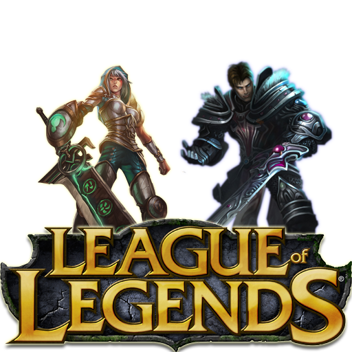

Produtos

League of Legends é um game online voltado para combates e invasão de bases, onde os jogadores assumem o comando de campeões, personagens poderosos e com habilidades variadas.
 Fortnite é um famoso jogo de tiro do tipo Battle Royale, ou seja, todos contra todos onde o último sobrevivente é o vencedor.
O game tem versões para PC, PS4, Xbox One, Nintendo Switch, iOS e Android.
Assim, como outros títulos do gênero, é necessário dominar uma série de estratégias para ficar vivo por mais tempo.
Fortnite é um famoso jogo de tiro do tipo Battle Royale, ou seja, todos contra todos onde o último sobrevivente é o vencedor.
O game tem versões para PC, PS4, Xbox One, Nintendo Switch, iOS e Android.
Assim, como outros títulos do gênero, é necessário dominar uma série de estratégias para ficar vivo por mais tempo.
 Valorant se aproveita de um tipo de jogo que está em alta no momento.
Trata-se de um FPS tático em que cinco jogadores batalham contra outros cinco visando plantar ou desarmar a chamada Spike.
Cada player tem apenas uma única vida por rodada (em um total de 25) e a equipe que ganhar 13 rodadas primeiro se consagra como a vencedora.
Valorant se aproveita de um tipo de jogo que está em alta no momento.
Trata-se de um FPS tático em que cinco jogadores batalham contra outros cinco visando plantar ou desarmar a chamada Spike.
Cada player tem apenas uma única vida por rodada (em um total de 25) e a equipe que ganhar 13 rodadas primeiro se consagra como a vencedora.